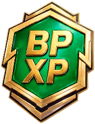

Medizin
Gegenstände · MedizinGewöhnlicher Event-Pass-EP-Token
Common Event Pass Token

Common Event Pass Token / MedizinWirkung
Eventpass-EP +20Beschaffung
BeschaffungBeuteAls Beute erhältlich
Gegenstandsbeschreibung
Verwenden, um 20 Event-Pass-EP zu erhalten